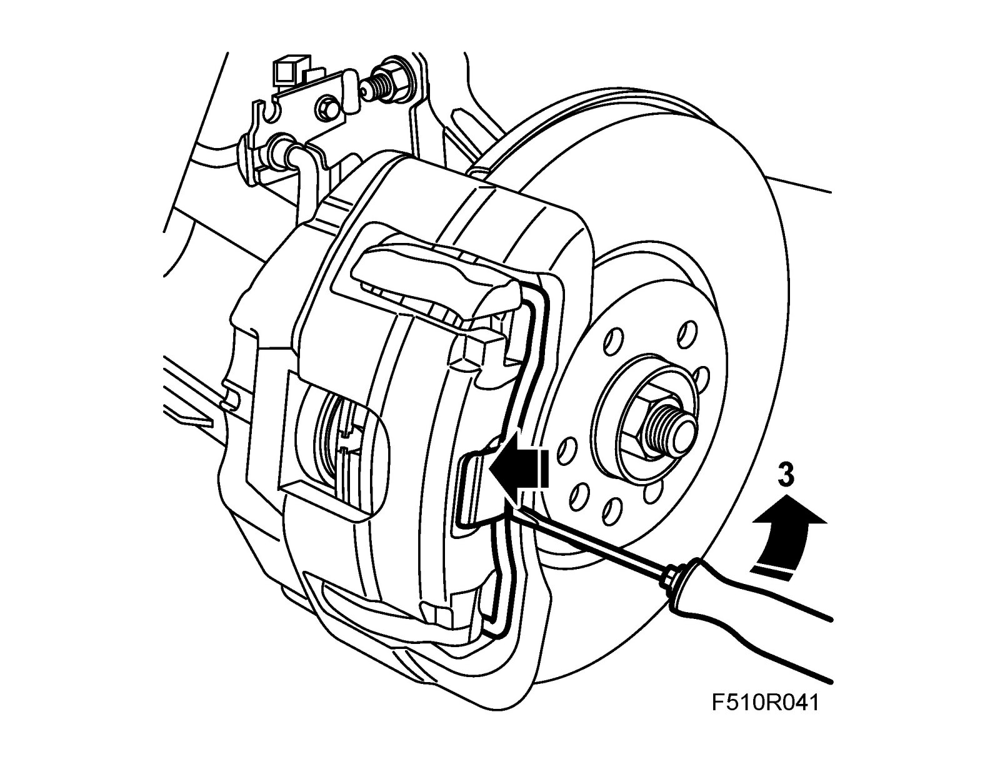
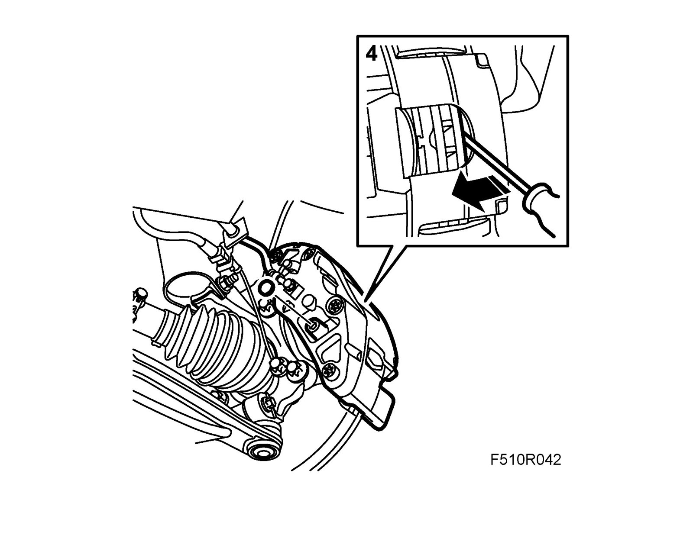
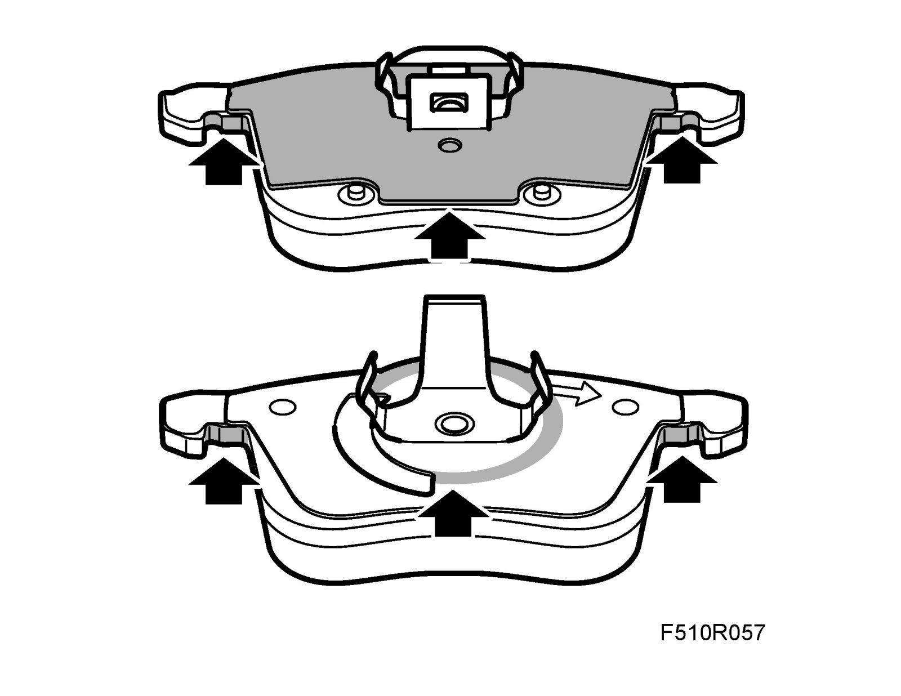
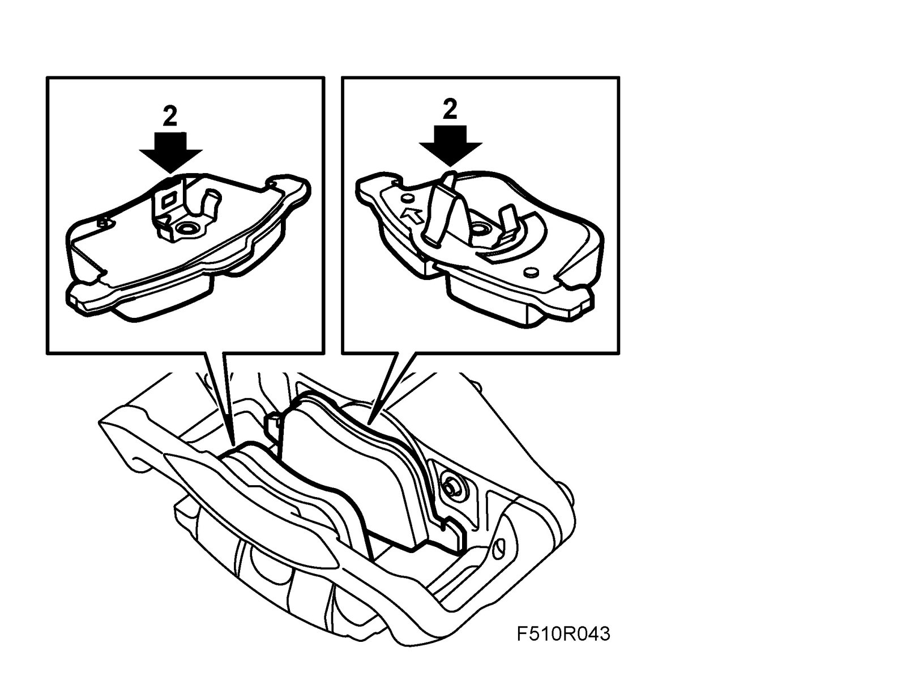
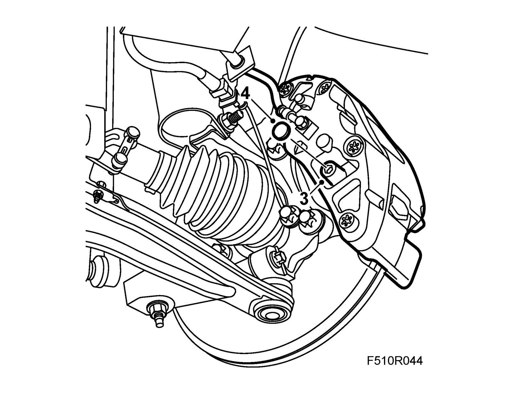
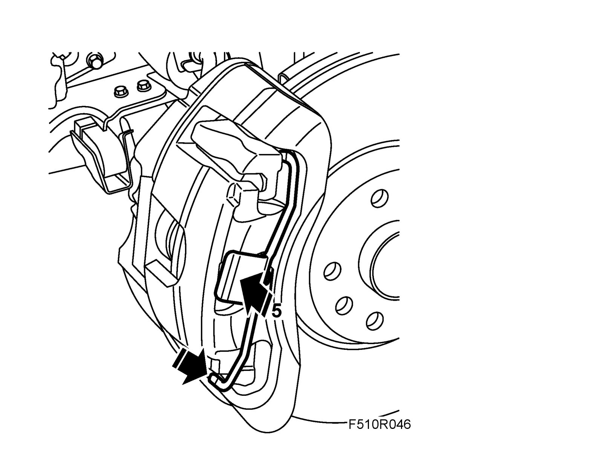

Brake Pads, Front, Level 3
Brake pads, front, level 3To remove
1. Raise the car.
2. Remove the wheel.
3. Remove the retaining spring from the brake caliper by prying with a screwdriver while pressing the flat part of the spring.
Warning
Hold the retaining spring plate when removing the spring so that it can be loosened slowly. The spring can otherwise fly off with great force.

4. Press in the piston by prying with a screwdriver against the brake pad.

5. Remove the protective covers and guide pins.
Lift off the hydraulic body.
Note
Be careful when handling the brake hose.
6. Remove the brake pads from the hydraulic body.
Clean the inside of the hydraulic body and check the dust covers.
To fit
1. Lubricate the pad sliding and contact surfaces with Special paste.

2. Fit the brake pads into the hydraulic body.
Note
The inner brake pad must be fitted so that the arrow points in the direction of rotation of the brake disc for forward travel.

3. Place the hydraulic body into the carrier.
Fit the guide pins.
Tightening torque 28 Nm (21 lbf ft)

4. Fit the protective covers.
5. Fit the retaining spring to the brake caliper. Position the upper edge and centre of the spring. Then press home the lower end of the spring. Make sure the lug engages.

6. Fit the wheel.
7. Lower the car.
8. Depress the brake pedal repeatedly in order to press out the brake pistons.
9. Check the brake fluid level and top up as necessary.
10. Check the operation of the foot brake.